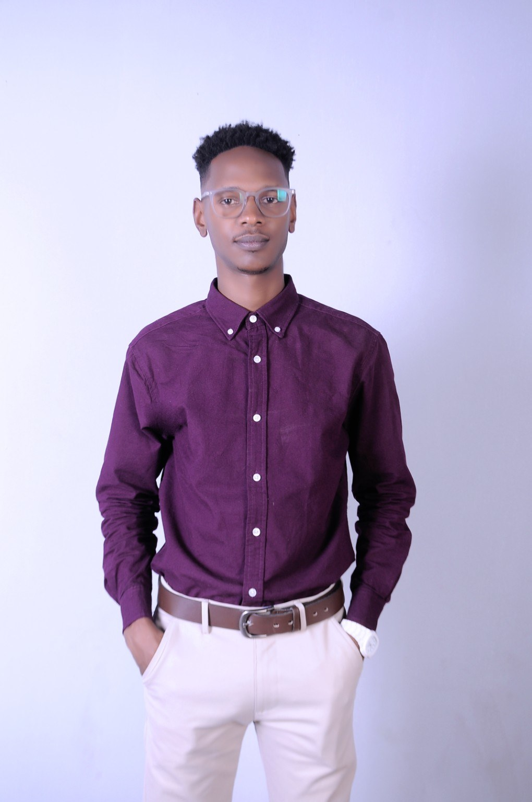

Design & Branding
Visual identity, graphic design, posters and creative direction.
Designer · Pharmacist · Health communicator
Turning ideas into meaningful impact across design, media, pharmacy and public health.
Dream. Design. Communicate. Inspire.

01 / About me
I'm Marwan Mohamed Ali — RONY, a pharmacy student and creative practitioner interested in the space where visual communication, health and community impact meet.
My work brings together design, media, pharmacy, public health and leadership. I enjoy turning complex ideas into clear communication and meaningful experiences.
02 / Areas of practice
A multidisciplinary approach shaped by creativity, science and communication.
Visual identity, graphic design, posters and creative direction.
Content creation, storytelling and digital communication.
Pharmacy practice, health education and scientific communication.
Team collaboration, volunteering and project coordination.
03 / Selected work
A curated selection of work across design, campaigns and communication. Detailed case studies will be added as each project is prepared.
Visual communication designed to make health information clearer and more accessible.
Brand systems, visual language and communication assets.
Content and creative work supporting pharmacy student engagement.
A platform for communicating culture, heritage and stories.
Project previews are category placeholders, not claims of completed case studies. Real project visuals and details will replace them.
Design · Communicate · Inspire
04 / Get in touch
Open to creative collaborations, meaningful projects and professional connections.